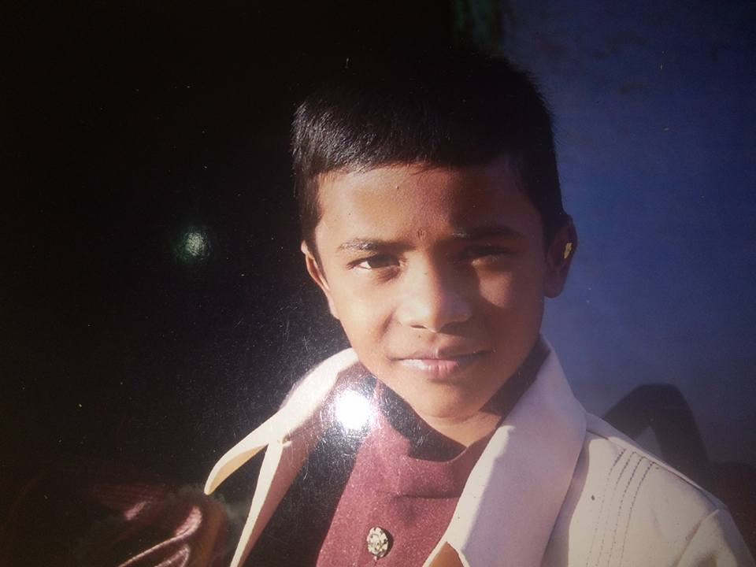

8th July,2019
Navgurukul selected me after many inter views
Hi guys I am Kirithiv R from Salem, Tamil Nadu. I was selected by Navgurukul after taking lots of interviews, now I am in the Navgurukul, Dharmasala campus,Himacal pradesh. I came here after a long travel, lets see what is the schedule followed by Navgurukul students.
Navgurukul is very amazing
My daily schedle in navgurukul. We use to wake up early in the morning 6'o'clock, we will do what ever we want. If we want to go and play cricket we will play,if we want to go and play volly ball we will plaly,if we want to go and do some excercise we will do,if we want to go and do meditation we will do, if we want to go and view the beauty of nature we will do.
And after 7'o'clock we will take some rest then take breakfast and the class starts at 8:20. We might appear class on time with our laptop and our pair .We will learn pair learning which means learning with our patner which increases the capacity of co-operation.After taking lunch at 1'o'clock I will go to the river and take path with my patner and friends. After taking bath I will appear on class at 2:30. We will study up to 5'o' clock. Then we will take some break and we will eat dinner at 8:30.I think this just short introduction about Navgurukul.
This is my first web page
This is my web page and I think it is looking good and this is my first website too. My first website is looking good ,because I learned how to create a good looking website or webpage from Navgurukul .Without Navgurukul it is not possible for me
I created this web site with the help of HTML
I created my first website by learning HTML,
1.HTML is defined as Hyper Text Markup Language,
2.HTML documents are described by HTML tags.
We use tags to markup the beginning and end of an element. Each element is written with an opening and a closing tag, with the content in between ,so the closing tag is just the same as the opening tag but with a slash. This is introduction about HTML

This is Photo of the co-founders of Navgurukul.Because of them only I am studiying in Navgurukul today, I am very thankful to them. My name is Kirithiv R.
